Вершина Signalgipfel (3393) расположена на главном хребте Штубайских Альп, по которому проходит Австрийско-Итальянская граница. К тому же хребту относятся расположенные западнее Signalgipfel вершины Zukerhütl (3507) и Wilder Pfaff (3459) (ит. Cima del Prete). К северо-западу от вер. Signalgipfel находится вер. Wilder Friger (3418), расстояние между вершинами составляет 300 м. К востоку от Signalgipfel находится двойная вершина Feuerstein (3267) (ит. Montarso). С севера от хребта находятся долины Sulzenau и Langental, ледники Fernerstube и Wilderfrigerferner. С южной стороны к хребту примыкают ледники Ebenferner (ит. Vedretta Piana) и Übeltalferner (ит. Vedretta di Malavalle), долина Ridnauntal (ит. Val Ridanna).
Ближайшими к вершине хижинами, расположенными с итальянской стороны являются Müllerhütte (ит. Rif. Cima Libera) и Becherhause (ит. Rif G. Biasi), которые построены на скалах, возвышающихся над ледником Ebenferner. С австрийской стороны ближайшими хижинами являются Sulzenauhütte, расположенная в одноименной долине, и Nürnberger Hütte в долине Langental. Ближайшим к вершине крупным итальянским населенным пунктом является Maiern (ит. Masseria), расположенный в долине Ridnauntal. Ближайшим австрийским городом является Neustfit в долине Stubaital.
Вершина Signalgipfel интересна для туристов благодаря тому, что через нее можно сравнительно легко пересечь главный хребет. Соответствующий маршрут идет по южному и северному отрогам главного хребта, примыкающим к вершине. Кроме того от Signalgipfel легко взобраться на Wilder Freger, идя по практически горизонтальному хребту длиной около 300 м, соединяющему данные вершины.
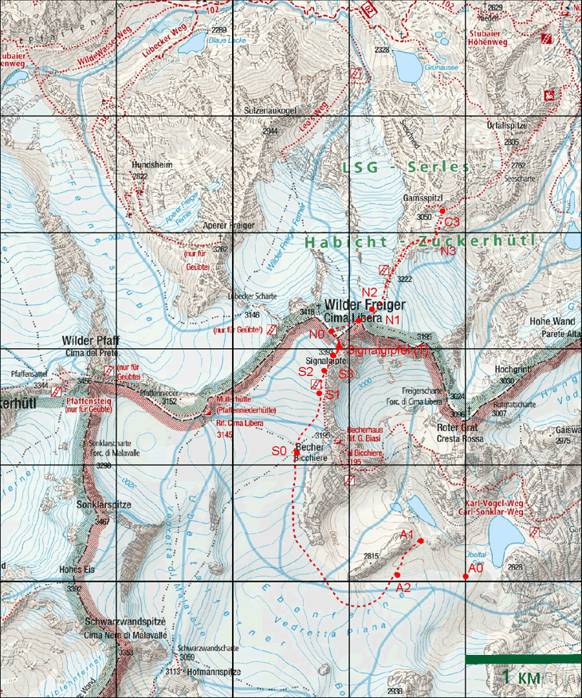
Рис. . Карта района издательства Kompass.
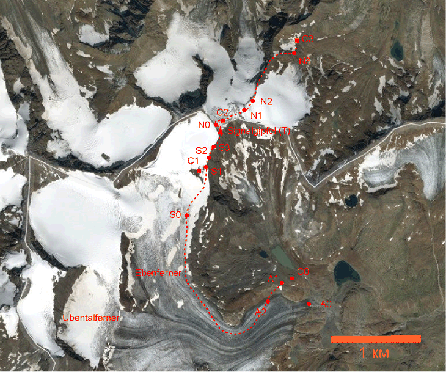
Рис. . Спутниковый снимок вер. Signalgipfel и ее окрестностей.
Вершину венчает широкая покатая каменная площадка, на которой установлена автоматическая метеостанция. Непосредственно к вершине примыкают две гребня, один из которых ведет на северо-запад к вер. Wilder Freiger (A), другой ведет на юг (B) (рис. satellite). Западный и восточный склоны имеют характерную крутизну не менее 60°. С запада от вершины находится ледник Ebenferner, вершина возвышается над ледником на высоту 100 м, склон с этой стороны – скально-осыпной; под вершиной находится бергшрундт. С севера от вершины находится обширное каменистое выполаживание, на котором расположены три небольших озерца и остатки каменного строения – бивуака либо пограничной заставы (D). В северо-восточной части от выполаживания отходит отрог (C), ведущий на северо-восток к вершине Gamsspitzl и перевалу Seescharte (2762, н.к. – 1А).
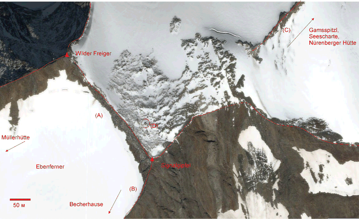
Рис. . Подробный спутниковый снимок вер. Signalgipfel.
Ледник Ebenferner открыт на высотах до 2850 м, выше начинаются закрытые участки в т.ч. трещины, закрытые снежными пробками. Следует отметить, что площадь закрытой части, по всей видимости, может существенно меняться год от года в зависимости от погоды.
Наиболее простой способ выйти на ледник – спуститься от безымянного озера, расположенного к северо-западу от оз. Übeltalsee на высоте 2680 м, по подвижной осыпи крутизной около 30°. (участок A1-A2, обозначения в соответствии с рис. satmap) на юго-восточном склоне хребта «отметка 2815». Перепад высот между точками A1-A2 составляет около 50 м. Выход на ледник непосредственно от оз. Übeltalsee осложнен сравнительно большой крутизной ледника в окрестности точки A0, требующей подъема на три такта либо даже провешивания веревки (рис. ubeltal_see_panorama).
Точки "S" и "N" на рис. map и satmap соответствуют маршрутам подъема на Signalgipfel про южному и северному отрогам, точки "C" обозначают места возможных стоянок.
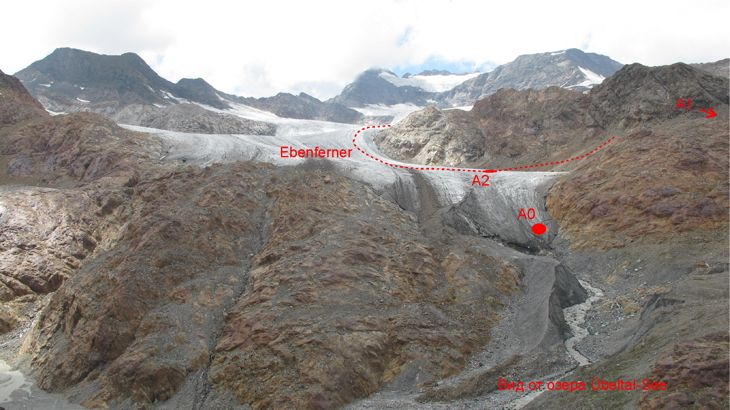
Рис. ubeltal_see_panorama. Панорама ледника Ebenferner, снятая со стороны оз. Übeltalsee.
Спустившись к леднику, следует двигаться к выполаживанию под приютом Becherhause (точка S0, высота 3050) держась северо-восточной границы ледника (рис. south_panorama, west_panorama). Набор высоты между точками А2-S0 составляет 350 метров, характерная крутизна ледника на этом участке – 20°, максимальная – 35°. На данном участке есть поперечные трещины, начинающиеся, как на границе ледника, так и идущие из его центра. Следует учитывать, что такие трещины могут быть закрыты непрочными снежными пробками.
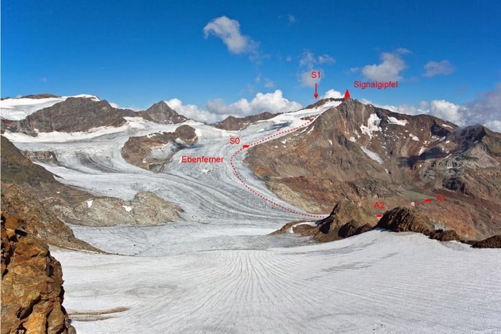
Рис. south_panorama. Панорама ледника Ebenferner c юга.
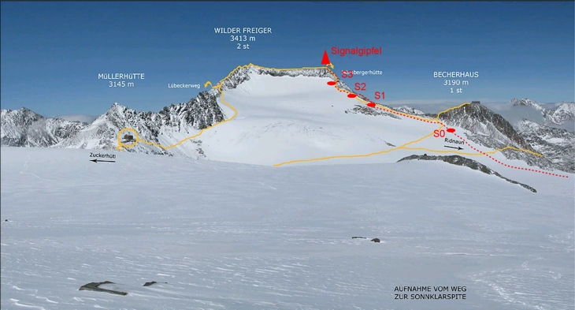
Рис. west_panorama. Панорама ледника Ebenferner c запада.
За исходную точку восхождения принимается точка S0. На первом этапе необходимо, двигаясь по леднику вдоль отрога, достигнуть точки S1, расположенной около верхней границы скального выступа. Набор высоты на участке S0-S1 составляет 150 м, характерная крутизна ледника 35°. На леднике присутствуют поперечные трещины.
В настоящее время участок в окрестности точки S1 между верхней границей скального выступа и отрогом сплошь покрыт валунами, оставшимися после таяния ледника.
От точки S1 необходимо добраться до точки S3, от которой начинается наиболее крутой участок подъема, защищенный ферратой. Сделать это можно тремя путями:
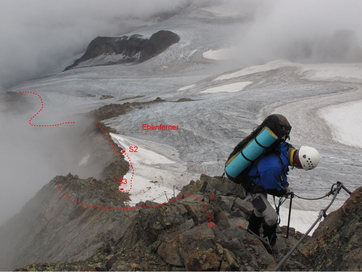
Рис. south_ridge. Подъем на вер. Signalgipfel по гребню южного отрога.
На месте, исходя из состояния тропы и следов на закрытой части ледника, был сделан вывод о том, что большинство туристов выбирают вариант 3.
В окрестности S1 можно легко подняться на гребень южного отрога. Для этого нужно подняться вверх по скальному склону на высоту около 10 метров по валунам.
От точки S1 до точки S2 вдоль гребня ведет четко различимая тропа маркированная красными метками через большие промежутки. В точке S2 гребень спускается практически до самого ледника; в этом месте тропа разветвляется и одно из ответвлений идет на ледник. Сойдя на ответвление, ведущее на ледник, следует подниматься вверх вдоль хребта.
Точка S3, на которой надо вновь вернуться на хребет, может быть обнаружена по следующим ориентирам:
Бергшрунда в окрестности точки S3 нет (по состоянию на август 2017).
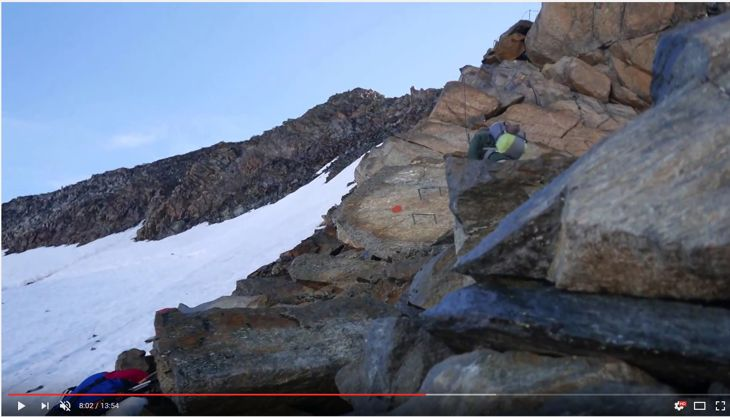
Рис. s3_point. Начало защищенного ферратой участка на подъеме к вер. Signalgipfel по южному отрогу.
Участок маршрута между точкой S3 вершиной T проходит по гребню хребта с характерной крутизной 30°-45°. Набор высоты составляет 100 м. Тропа проходит, в основном, по гребню хребта, за исключением небольшого участка, на котором она идет траверсом западного склона (рис. south_ridge, ferrata). Участок S3-T полностью защищен ферратой. На участке с траверсом феррата представляет собой трос в синтетической оплетке толщиной около 2.5 см, закрепленный на анкерах, установленных в скальной стене. На момент прохождения препятствия анкеры были надежно закреплены в скале. На участках, идущих по гребню, используется металлический трос который, в основном, закреплен на опорах высотой около 1 м. Некоторые опоры к моменту прохождения препятствия держались в скале непрочно.
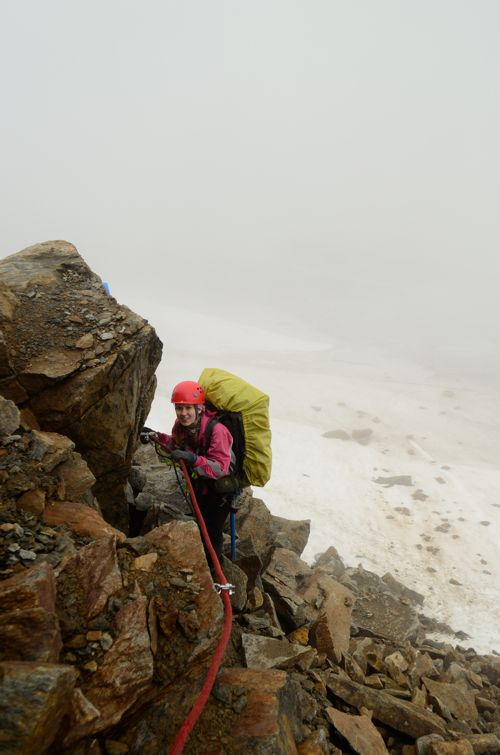
Рис. ferrata. Траверс на подъеме по гребню южного отрога.
Во время прохождения участка с траверсом необходима страховка на феррате, для осуществления которой нужна страховочная обвязка, в которую встегиваются два уса с широкозахватными карабинами на концах. Конструкция ферраты, установленной на участках тропы идущих по гребню хребта, также позволяет применить подобную страховку, если туристы сочтут ее необходимой. При этом следует учитывать, что трение дюралевого карабина о металлический трос без синтетической оплетки приводит к износу карабина.
Спуск начинается от разрушенного здания (точка N0) по тропе, маркированной турами, (рис. nord_dropfol). Движение по тропе по выполаживанию не вызывает затруднений. Тропа выводит к отрогу, идущему от вершины в северо-восточном направлении. В точке N1 тропа выходит на ледник. Характерный уклон -- 30°, максимальный – около 45°. Перепад высот на крутом участке не превышает 20 м. (рис. nord_ice_slope). В зависимости от месяца и погоды ледник может оказаться как открытым, так и закрытым.
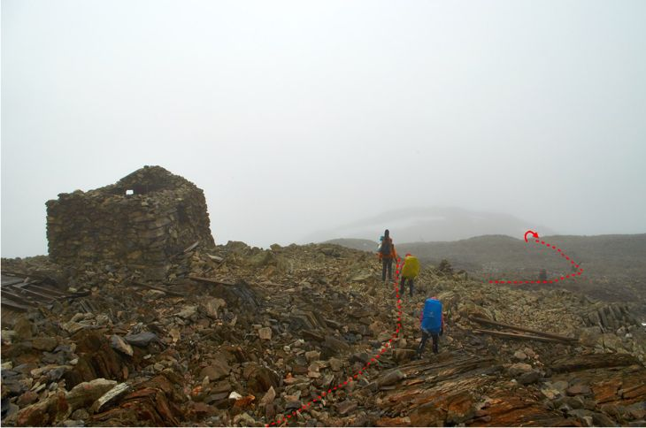
Рис. nord_dropfol. Выполаживание на северном склоне вер. Signalgipfel.
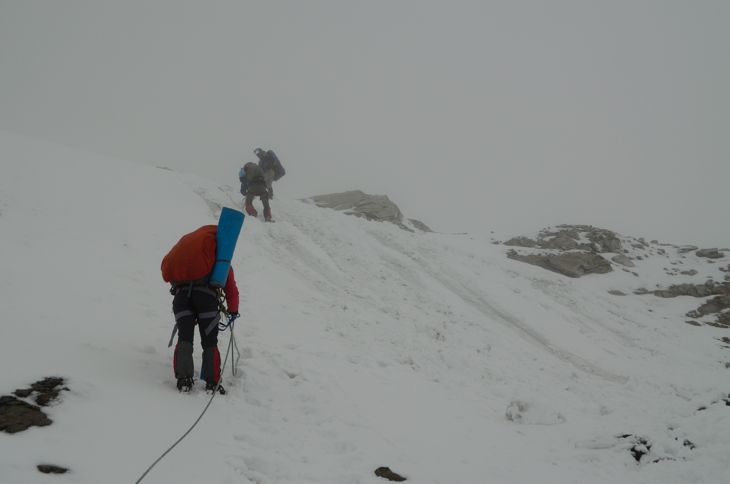
Рис. nord_ice_slope. Крутой участок ледника на спуске с Signalgipflel.
По леднику следует двигаться вдоль хребта (С) по рис. satellite так, чтобы он оставался по левую руку. Вскоре после прохождения крутого участка следует выйти на тропу, идущую по гребню хребта в точке N2 (рис. satmap). Бергшрундта около точки N2 нет. Тропа по хребту набита и заметна с ледника (рис. n2_point, nord_ridge). Перепад высот между точками T и N2 не превышает 100 м.
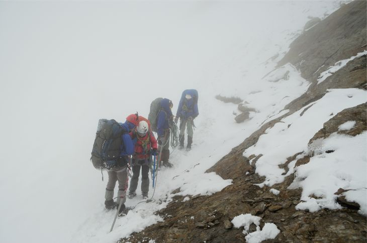
Рис. n2_point. Выход на хребет с ледника в точке N2.
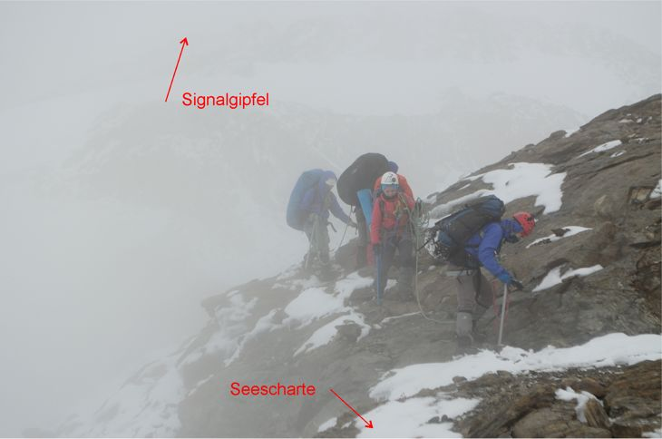
Рис. nord_ridge. Тропа, идущая по хребту (С) по рис. satellite.
Между точками N2 и N3 (рис. satmap) маршрут идет по гребню отрога, тропа заметна, хотя и узка (рис. nord_ridge, sg_ascend). Характерный угол наклона хребта составляет 35°. Движение не подразумевает навески страховых перил, однако может возникнуть необходимость в применении свободного лаза на отдельных участках. Для маркировки тропы используются туры, либо краска. Метки расположены достаточно редко, ферраты на момент прохождения отсутствовали (хотя на конечном участке были обнаружены материалы – тросы, анкеры, ступени – приготовленные для сооружения ферраты). При движении по хребту группой использовались связки.
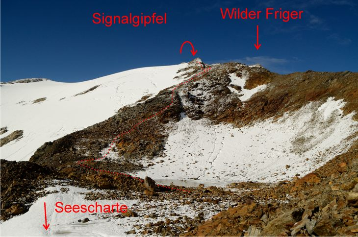
Рис. sg_ascend. Спуск от вер. Signalgipfel к выполаживанию под вер. Gamsspitzl по хребту. Маршрут спуска показан примерно!
Перепад высот между точками N2 и N3 составляет 350 м, спуск завершается в точке N3 на высоте 2950 – выполаживании под вер. Gamsspitzel. Описанный маршрут оценен DAV как «Alpline Route».
От точки N3 к перевалу Seecharte (2762, н.к. – 1А) ведет маркированная тропа, проложенная траверсом хребта. Тропа выходит на седловину перевала сверху; перепад высот на этом участке составляет 200 м. На седловине тропа разделяется: в северном направлении траверсом отрога уходит тропа к приюту Nürnberger Hütte, на восток ведет тропа к Sulzenauhütte; ориентиром служит указатель, установленный на седловине перевала. Тропа к Sulzenauhütte спускается в долину Sulsenau по западному взлету перевала Seescharte. Оба маршрута охарактеризованы DAV как «черные».
Здесь описаны подъем и спуск на вершину по двум наиболее простым маршрутам. Для их прохождения от каждого из участников требуется уметь:
Наиболее удобными местами для стоянок к югу от вершины является озера Übeltalsee и безымянное озеро, расположенное к северо-востоку от него на высоте 2680 м (рис. map, satmap). Источниками воды на этих стоянках являются ручьи, вытекающие из озер.
Также возможна стоянка на скальном выходе на леднике Ebenferner (точка C1 по рис. satmap). В этом случае палатку придется устанавливать на камни (щебень на горизонтальном участке скалы), для чего придется предварительно выровнять площадку (рис. c1_camp). Источником воды может служить достаточно мощный ручей, текущий по скалам.
Устраивать лагерь непосредственно на леднике не следует из-за потоков воды, текущих по его поверхности в случае дождя.
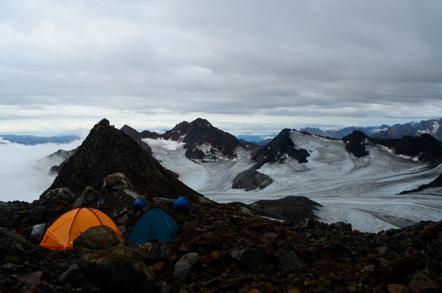
Рис. c1_camp. Стоянка на скальном выходе на леднике Ebenferner. Направление съемки – на юго-восток.
В экстренной ситуации стоянка может быть устроена непосредственно на выполаживании с севера от вершины (точка С2 по рис. satmap); источник воды – небольшие озера, либо ручьи (рис. c2_camp).
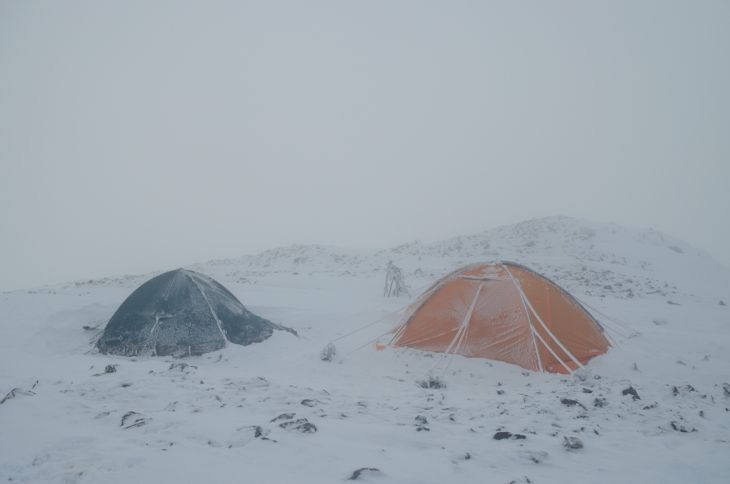
Рис. c2_camp. Стоянка на выполаживании к северу от вер. Signalgipfel. Направление съемки – на север.
Возможна стоянка на выполаживании под вершиной Gamsspitzel (точка C3 по рис. satmap), источник воды – ручей, текущий из озера под вершиной (рис. c3_camp). Более благоприятные места для стоянки следует искать в долине Sulzenau.
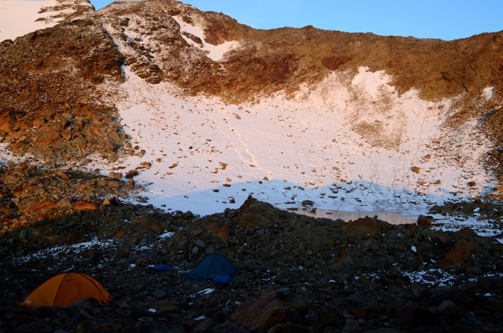
Рис. c3_camp. Лагерь на выполаживании под вер. Gamsspitzel . Направление съемки – на запад.
Выход осуществляется по тому же маршруту, что и восхождение (рис. south_escape, маршрут a). От озера Übeltalsee нужно выйти на тропу Karl-Vogel-Weg (№9), для этого нужно подняться по осыпному склону крутизной 20°, находящемуся на востоке от Übeltalsee (точка D). Далее следует выходить в н.п. Maiern по тропе, идущей через приюты Teplitze Hütte и Grohmannhütte.
Альтернативный вариант (b) заключается в подъеме к приюту Becherhause по тропе, ведущей от точки S0. Подход к указанной тропе отмечен огромной «мишенью» из красных и белых кругов на скале. Подъем к приюту, по всей видимости, защищен ферратой. От приюта Becherhause идти к Teplitze Hütte по тропе Karl-Vogel-Weg и далее в Maiern. При подготовке была найдена информация, что часть тропы между приютом Becherhause и точкой D защищена ферратой, однако группой наличие феррат и их качество не проверялись.
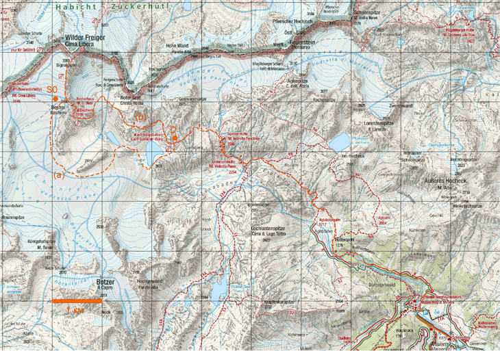
Рис. south_escape. Аварийный выход в н.п. Maiern.
Выходить к перевалу в соответствии с описанием спуска с вершины по северному отрогу. От перевала идти по тропе к Nürnberger Hütte и далее к хутору Bsuchalm, к которому ведет автомобильная дорога, либо далее к шоссе в долине Stubaital (рис. nord_escape, маршрут отмечен оранжевым пунктиром).
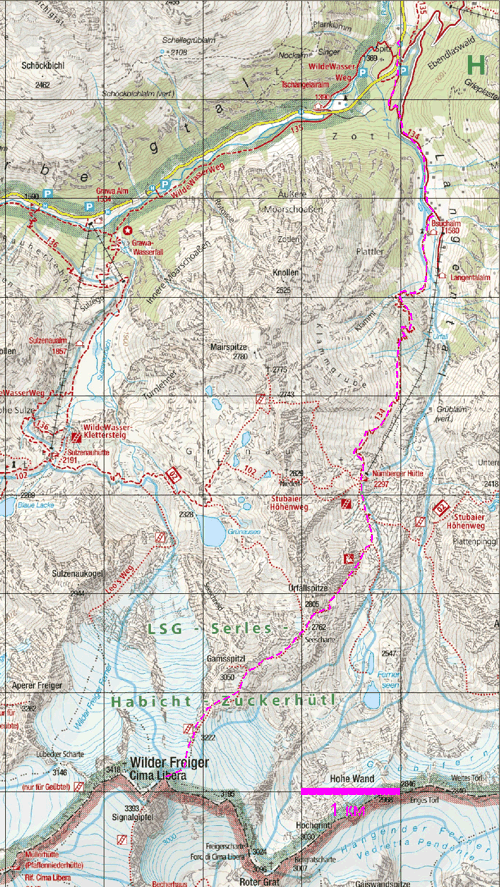
Рис. nord_escape. Аварийный выход в долину Stubaital.
Из-за плохой погоды, путь через вершину занял у группы 3-е суток. К вечеру 16 августа группа вышла к озеру Übeltalsee. При осмотре подхода к леднику (рис. ubeltal_see_panorama), стало ясно, что выйти от него к озеру будет сложно. Поэтому на следующий день во время дневки была проведена разведка спуска к леднику от безымянного озера к северо-западу от Übeltalsee (рис. map). Разведка показала, что такой спуск возможен и лагерь был перенесен к указанному озеру.
Утро 18 августа выдалось туманным: облака низко висели над ледником Ebenferner. Собрав лагерь, группа спустилась на ледник по подвижной осыпи южно-восточного склона хребта 2815. Выйдя на ледник, группа начала подъем к точке S0 по рис. satmap. Поскольку ледник был открыт, группа двигалась в кошках без связок, обходя трещины и закрытые участки.
К обеду группа вышла к точке S0, погода не улучшилась, над ледником по-прежнему висело облако, при этом видимость в горизонтальном направлении сохранялась не хуже чем 500 м. Немного не доходя до точки S0, группа установила на леднике палатки для приготовления обеда. Воду брали из ручейков, текущих по леднику.
Во время приготовления обеда к группе подошел немец, поднимавшийся, по всей видимости, вслед за нами. Он сообщил, что видел наши палатки на протяжении последних трех дней и поинтересовался, что мы вообще там делаем. Получив ответ, он посоветовал нам устанавливать палатки не на леднике, а на скалах, поскольку во время дождя по леднику могут течь сильные потоки воды. После этого он ушел либо в Becherhaus либо в Müllerhütte.
Мы решили последовать совету немца и поднялись к скалам (точка С1 на рис. satmap), где и установили лагерь. Во время подъема мы вышли к закрытому участку ледника, который приодалевали в связках.
Выбравшись на скальный выход и найдя горизонтальные площадки, мы принялись выравнивать их с целью установить палатки. Поставив лагерь, мы нашли ручей, текущий по скалам в 20 м. к востоку от нашего лагеря.
Ночью пошел сильный дождь, и мы в полной мере оценили правильность совета немца.
К утру 19 августа видимость сократилась до 100 метров. Начав подъем по леднику, мы практически сразу вышли к каменистой перемычке S1 между скальным выходом и гребнем хребта (рис. satmap). Обнаружив маркированную тропу, идущую по гребню, мы продолжили движение по ней и вышли к точке S2. Мы решили продолжить путь по гребню, потому что в противном случае нам пришлось бы идти в связках по закрытому леднику, что было бы значительно медленее. Выйдя к точке S2, мы обнаружили по состоянию тропы и следам на снегу, что большинство туристов спускаются от нее к леднику, и продолжили свое движение уже по нему. Подниматься пришлось в связках, под снегом было обнаружено несколько трещин. Выйдя к точке S3, в которой начинался защищенный ферратой подъем, мы вновь вернулись на гребень. При прохождении ферраты вплоть до самой вершины мы страховались на ней как на участках, шедших траверсом хребта, в которых страховка была, безусловно, необходимой, так и на участках, идущих по гребню.
Достигнув вершины, мы попали в облако, видимость сократилась до нескольких десятков метров. Панораму, открывающуюся с главного водораздела, мы видели лишь во время коротких прояснений.
Спустившись на каменистое выполаживание, мы установили на нем палатки для приготовления обеда. Воду взяли из ручейка, текшего неподалеку и впадающего в крохотное озерцо.
За время обеда погода окончательно испортилась: поднялся сильный ветер, пошел дождь, который затем перешел в снег. Мы приняли решение заночевать на выполаживании, о подъеме на Wilder Friger, равно как и о спуске по северо-восточному гребню не могло быть и речи. По спутниковому телефону мы запросили у диспетчера прогноз погоды. Ответ гласил, что погода начнет улучшаться завтра: во второй половине следующего дня следует ожидать прояснения.
19 и 20 августа были выходными днями. За сутки, которые мы провели под Сигналгипфелом, минимум 3 группы поднялись на Wilder Friger. В условиях практически нулевой видимости они растворялись в молоке, окружающем вершину. С одной из них состоялся короткий разговор. Туристы пришли из Sulzenauhütte по тропе, называемой Lübecker Weg и планировали, спустившись с Wilder Friger по северовосточному хребту Signalgipfel, уйти в Nürnberger Hütte. Следует отметить, что Lübecker Weg – гораздо более сложный путь восхождения на Wilder Friger, чем маршруты, проходящие через Signalgipfel.
20 августа. С утра ждем обещанного прояснения, к полудню видимость действительно немного улучшается. Забираемся на главный водораздел, но ледника Ebenferner с него практически не видно. Восхождение на Wilder Friger в таких условиях не имело смысла, поэтому было принято решение спускаться по северо-восточному гребню в соответствии с запланированным маршрутом. Мы без проблем преодолели пологий участок склона вер. Signalgipfel, после чего тропа вывела нас к леднику. После прошедшего снегопада он был полностью закрыт, поэтому мы шли, используя связки. Крутой участок спуска, описанный выше, мы преодолели, двигаясь на три такта, без каких либо затруднений.
Подойдя к отрогу, мы, не снимая связок, вышли на гребень и начали спуск по нему.
В рассказах туристов в качестве основного препятствия на подъеме/спуске по северо-восточному отрогу назывался именно крутой участок ледника. Но последовавшие за ним 300 м спуска по гребню заставили нас усомниться в этом утверждении. Один раз мы потеряли тропу и прошли короткий участок траверсом отрога и лишь потом, заметив удобный для подъема на гребень участок, вернулись на тропу. Таким образом, мы обогнули достаточно сложный участок, для прохождения которого, возможно, пришлось бы прибегать к свободному лазу.
Основная часть спуска прошла в тумане. Спустившись на высоту 3100 метров мы, наконец, вышли из облака. У нас не оставалось времени до заката, чтобы выйти в долину Sulzenau через перевал Seescharte, поэтому было принято решение разбить лагерь на каменистом выполаживании под вершиной Gamsspitzl. Как и в предыдущие два дня, установке палаток предшествовала процедура постройки фундамента из плоских камней.
К моменту окончания постановки лагеря горы окутала ночь, и мы увидели звезды. Утро 21 августа встретило нас абсолютно ясной погодой.